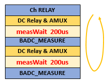

measWait()
Specifies the time to wait between the previous event and measuring the value.
Syntax
measWait(double dMeasWait);
| Parameter | Description |
|---|---|
| dMeasWait | The time to wait |
Examples
Example 1
rdi.dc(0).pin("pinA",TA::BADC).vMeas().measWait(1 ms).execute();Example 2
For BADC-HIZ measurements via the DC-relay, the
measWait() time is effective before every measurement. The connection is done
serially via the DC-relay and thus a serial setting is required. The default wait time is
100 us.
This behavior is different from the measWait()
command used in BADC-HIZ measurements via the PPMU with
valueMode(TA::BADC).
Below is an example, where pin "DATA36" is over 2 sites (for example, 10308 and 10310) which share the same BADC.
RDI_BEGIN();
rdi.dc().pin("DATA36", TA::BADC).vMeas().measWait(200 us).execute();
RDI_END();There are two measurement wait intervals, one for each site, as the following figure shows.

Functional changes
- Introduced in SmartRDI 2.1.0
- SmartRDI 2.4.4: For BADC-HIZ measurements via the DC-relay, the measWait() time is effective before every measurement.